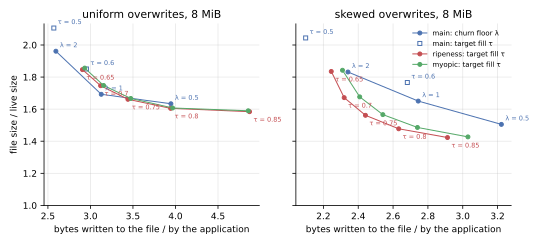
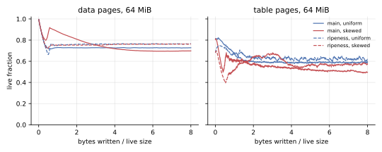
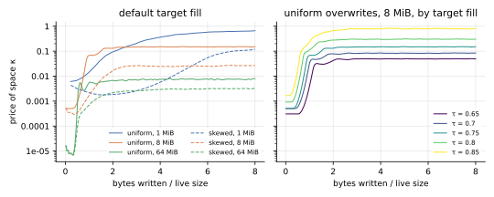
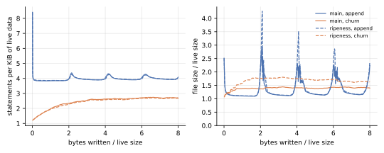
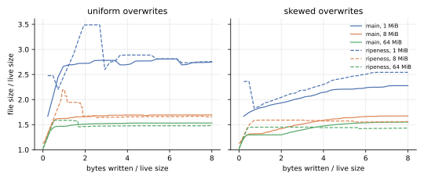
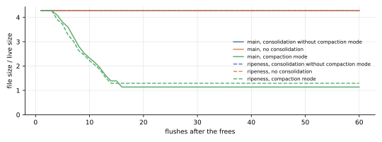
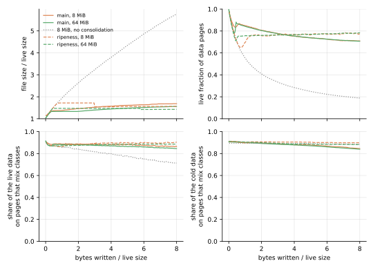
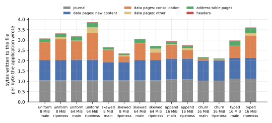
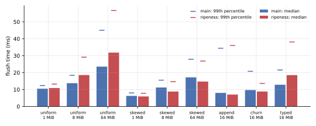

Updated for the draft’s clarifications, as of kladde-docs commit b33a836: the branch now measures a page’s fill relative to the fill survivors are packed at, which moved no result of 8 MiB or more by more than 1 % in file size or 2 % in writes.
The clarified draft ranks a page by , with , and never cleans a page at or above ; the first version ranked pages by , with only as a cap.
The controller absorbs the difference: it settles the price of space 15 to 50 % higher, since lies below at every fill, and the trade-off curves of the two versions lie within 1 % of each other.
The branch also carries the rates that fresh content starts from across sessions now, since the clarified draft rules out estimates that start from nothing; these runs, one session each, do not exercise it.
The ablation that the clarified draft proposes, ranking without the logarithm, writes 3 to 6 % more for the same file size under skewed overwrites, and 1 to 4 % more under uniform ones: see Without the logarithm.
This update’s runs shared their host with other work, so the flush times on this page are still the first version’s; its tables are in kladde-docs commit 08febdf.
Cleaning by ripeness, as the draft proposes, keeps a file under skewed overwrites 10 to 12 % smaller than the current design for the same writes, or writes 4 to 20 % less for the same file size; under uniform overwrites the two are level, as the draft predicts. At the default settings of each, the 8 and 64 MiB skewed files come out 5 to 6 % smaller for 10 to 11 % fewer writes. It gains where the draft says it should: under skew, the current design’s data pages lose fill for most of a run as pages freeze above the churn floor, and ripeness’s hold at 0.76. Where hot, cool, and never-changing cold allocations share pages at random, it gains about as much, a file 4 to 5 % smaller for 9 % fewer writes, since main’s data pages freeze there too; neither policy separates the cold content from the rest.
It took one change to the draft to work: the controller that sets the price of space must measure the fill of the data pages and leaves, not of the whole file, or the price swings over decades. Three costs remain. Recording every page’s estimate in the consolidator state takes 1 to 7 % of the writes. Under churn the file comes out 19 % larger. And after a mass free the price takes 13 to 19 flushes to climb back from where calm phases left it, so the file peaks higher.
What was measured
The same benchmark ran on the ripeness branch of kladde-rs, and on main.
Main is at commit cb34576, as on the consolidation page.
Its tables here are from a run made back to back with the first version of the branch, so that their times compare; a run of main for this update reproduced every number in them but the times, as the benchmark is deterministic but for its times.
The branch is at 362210a, which follows the draft as of kladde-docs b33a836; the first version, at f7d4eab, ranked pages by their absolute fill.
Two more runs of the branch, at the same commit, measure what the consolidator state costs, by leaving it out, and what the logarithm contributes, by ranking pages without it, as the draft’s ablation does.
The mixed workload ran later, on the branch at 799c661, and on main from the branch main-mixed at 7646408; both commits add it to kladde-bench and change nothing else.
The experiments this page cites besides, on the controller and on churn, ran on the first version, changed for the purpose, and are not part of the committed code.
The branch fills in what the draft leaves open with a forgetting rate β = 0.1 per flush, a floor R_MIN = 10⁻⁴ and a starting price κ = 0.01 (the draft’s own examples), a cursor that gives up pages older than W = 8 flushes, and a budget of 256 pages per flush, which is now a fixed cap.
Its controller aims the data pages and leaves at a fill τ = 0.75 by default, where main aims the whole file at 0.8 and never gets there.
implementation-notes.md in kladde-rs lists every departure from the draft.
Where main’s page compares policies, it uses steady states: the file size averaged over the second half of each run, and the bytes written during that half per byte the application wrote. Both controllers take a live size or more of writes to settle, which end-of-run values would mix in.
The trade-off
Under skewed overwrites, ripeness’s curve lies below main’s everywhere they overlap; under uniform ones, the two curves cross, within 3 % of each other.

| 8 MiB, steady state | main | ripeness, same writes | ripeness, same file size |
|---|---|---|---|
skewed, λ = 2 | 1.83 times the live size, 2.34 bytes per byte | 1.65 (−10 %) | 2.25 bytes per byte (−4 %) |
skewed, λ = 1 | 1.65, 2.74 | 1.46 (−12 %) | 2.34 (−15 %) |
skewed, λ = 0.5 | 1.51, 3.22 | below 1.42 | 2.57 (−20 %) |
uniform, λ = 1 | 1.69, 3.13 | 1.74 (+3 %) | 3.32 (+6 %) |
uniform, λ = 0.5 | 1.63, 3.95 | 1.61 (−2 %) | 3.69 (−7 %) |
The ripeness columns interpolate between its runs at targets 0.65, 0.7, 0.75, 0.8, and 0.85.
Skew is where ripeness gains, and for the reason the draft gives. The churn floor cleans a page only once it is half empty; a page whose hot content has died and whose cold content stays freezes above that, and keeps its garbage. In main’s 64 MiB skewed run, data pages lose fill for most of the run, down to 0.70; in ripeness’s, they hold at 0.76, since a frozen page, draining at the floor rate, is ripe at a fill a draining page never is.

Under uniform overwrites every page drains alike, and ripeness reduces to a single fill threshold, like the churn floor. What remains between the curves is noise: a page’s estimate comes from its own sporadic losses, so pages that drain alike get different estimates, and a threshold that differs page by page costs a little at light cleaning.
The controller
Measuring the whole file, the price controller swung by two to three decades; measuring the data pages and leaves, it holds within about 10 %.
The draft’s controller moves κ by exp(gain · (τ − fill)) after every flush, as main’s moves its budget.
The first version’s controller measured the whole file, like main’s.
But cleaning does not shrink the file at once: the pages it frees stay free until new writes reuse them, so the whole file’s fill answers a change of price only many flushes later, and an integral controller on a lagging measure cycles.
At 8 MiB and a target of 0.5, the price swung between 2·10⁻⁴ and 0.09, a swing per one to two live sizes of writes, and at targets of 0.5 to 0.6 the files ended up 8 to 20 % larger than a fixed price gave for the same writes.
The data pages and leaves, which cleaning acts on, answer within the flush.
Measured there, the price holds within about 10 % of its median over the second half of every overwrite run of 8 MiB or more; in the first version, gains of 0.5 and 2 gave the same results, and the steady states fell on the curve that fixed prices traced.
The holes the measure leaves out are compaction mode’s to return anyway.
The consolidation page suggests the same change for main’s budget.

The price also has to hold where moving it can change nothing. A file starts full, so without that the first flushes drove the price to its floor, and it took one to two live sizes of writes to climb back. The branch holds the price after a flush that cleaned nothing while the fill is above target, and after one that spent its whole budget while the fill is below; the clarified draft asks for the second.
That is not enough after a mass free.
Between the append workload’s rotations, the live pages sit above target, and the price drifts down to 3·10⁻⁵ even so, since small moves by free filling count as cleaning.
When the logs rotate, the price needs 13 to 19 flushes to climb three decades, and the file peaks at 4.3, 3.5 and 2.9 times its live size, where main’s peaks at 2.9, 2.3 and 2.3.

At the default settings
Ripeness at its default target writes less than main at its default under skewed overwrites and appends, and more under uniform overwrites, where its target lies further along the same curve.
| steady state, file size / live size and bytes written per byte | main | ripeness | change |
|---|---|---|---|
| uniform, 8 MiB | 1.69, 3.13 | 1.66, 3.44 | −2 %, +10 % |
| uniform, 64 MiB | 1.53, 3.26 | 1.48, 3.99 | −4 %, +23 % |
| skewed, 8 MiB | 1.65, 2.74 | 1.56, 2.44 | −5 %, −11 % |
| skewed, 64 MiB | 1.53, 3.15 | 1.43, 2.84 | −6 %, −10 % |
| append, 16 MiB | 1.38, 3.14 | 1.44, 2.96 | +4 %, −6 % |
| churn, 16 MiB | 1.41, 2.18 | 1.68, 2.12 | +19 %, −3 % |
| typed, 16 MiB | 1.53, 3.04 | 1.46, 3.81 | −5 %, +25 % |

The 1 MiB files are dominated by the quarantine, as on the consolidation page, and their 33 flushes are too few for either controller to settle; the skewed one comes out 11 % larger with ripeness.
Under churn, ripeness’s file is 19 % larger, and neither a higher target nor more generous free filling closes the gap. Main’s churn run keeps data pages 91 % full, taking half of its victims for free in the room of pages the flush writes anyway, and moves 14 MB of survivors against ripeness’s 4 MB. In the first version, at a target of 0.85, ripeness’s data pages reached 0.88, but its file still kept a third of the live size in free pages, against main’s quarter, and ended 9 % larger for about the same writes. In experiments on the first version, letting free filling take any ripe victim that fits, or any victim at all, changed nothing, or made things worse; why churn leaves ripeness with more free pages remains open.
After three quarters of a file are freed, compaction mode returns the space as fast as on main, but stops earlier. The file reaches 1.29 times its live size within 14 flushes, where main’s reaches 1.14 within 16. Both stop once holes fall below a quarter of the file; ripeness’s run crossed that line with 20 % holes left, main’s overshot to 11 % in its last step.

Hot, cool, and cold allocations on shared pages
When hot, cool, and cold allocations share pages at random, ripeness gains over main about as much as under skewed overwrites, a file 4 to 5 % smaller for 9 % fewer writes, but neither policy separates the cold content from the rest.
kladde-bench’s mixed workload is skewed with each allocation’s class drawn at random.
A tenth of the allocations are hot and take nine tenths of the writes; the other writes go to any allocation alike, as under skewed overwrites, except that the 45 % of allocations that are cold never change, so writes drawn for them are not made.
The allocations are 1 KiB, four to a page, so that the pages written at the start mix classes, 91 % of the live data at 8 MiB.
Skewed overwrites mix far less: their allocations of 16 KiB fill pages of their own, and their hot allocations hold the lowest ids, so a flush, which packs in key order, writes them apart from the rest.
Each row of the workload’s table records how much of the live data, and how much of the cold data, lies on pages that mix classes.
| steady state, file size / live size and bytes written per byte | main | ripeness | change |
|---|---|---|---|
| mixed, 8 MiB | 1.64, 2.70 | 1.56, 2.47 | −5 %, −9 % |
| mixed, 64 MiB | 1.51, 3.15 | 1.44, 2.85 | −4 %, −9 % |
Under skewed overwrites, ripeness gains 5 to 6 % in file size and 10 to 11 % in writes. At 1 MiB, where the quarantine dominates, ripeness’s mixed file is 17 % larger, as its skewed one is 11 % larger.
Main’s data pages freeze here as they do under skewed overwrites. Main’s data pages lose fill for the whole run, from about 0.85 early on to 0.71 at its end, since a page whose hot content has died keeps its cool and cold content above the churn floor; ripeness holds its data pages at 0.77. The file’s size moves in steps, when freed pages come to lie at its end, where truncation returns them, so the space its live pages take shows the difference better: 1.39 times the live size under ripeness, against 1.47 to 1.48 under main.

Neither policy separates the cold content from the rest. At the start, 91 % of the cold data shares a page with content that still changes. Under ripeness, 90 % still does at the end of the 8 MiB run and 88 % at the end of the 64 MiB one, as 89 % does without any cleaning; under main, the share falls slowly, to 85 and 84 %, most likely as the cool content of frozen pages dies away and leaves some of them holding cold content alone. Ripeness cleans the mixed pages that main leaves frozen, but packs their survivors together again: once a page’s hot content has died, what survives on it is cool content, which still dies, next to cold content, which never will, and nothing tells the two apart. The draft’s “cold with cold” assumes that what survives has stopped dying; here it may only be slow.
Without the logarithm
Ranking pages by the myopic in place of writes 3 to 6 % more for the same file size under skewed overwrites, as the draft’s ablation predicts, and 1 to 4 % more under uniform ones, where it predicts no difference. The ablated branch differs from the full one in nothing but the fill term of the index, and its controller aims at the same targets. Under uniform overwrites, too, pages do not all drain at one rate: leaves drain at a rate of their own, and each page’s estimate strays from its true rate.
| 8 MiB, steady state | ripeness | myopic, same file size |
|---|---|---|
skewed, τ = 0.7 | 1.67, 2.32 | 2.41 (+4 %) |
skewed, τ = 0.75 | 1.56, 2.44 | 2.55 (+5 %) |
skewed, τ = 0.8 | 1.48, 2.63 | 2.78 (+6 %) |
uniform, τ = 0.7 | 1.75, 3.12 | 3.16 (+1 %) |
uniform, τ = 0.75 | 1.66, 3.44 | 3.52 (+2 %) |
uniform, τ = 0.8 | 1.60, 3.94 | 4.09 (+4 %) |
At the default target, the 64 MiB files come out the same size either way, and the myopic rule writes 5 % more under skewed overwrites and 4.5 % more under uniform ones. Under appends it writes 1.6 % more, under churn 1.5 % more for a file 1 % smaller, and after the mass free it compacts exactly as the full rule does.
The extra writes are survivors, and they are few because survivors are a small part of what a flush writes. Under skew, the myopic rule moves 30 % more survivors per byte the application wrote: 0.44 bytes against 0.34 at 8 MiB, 0.59 against 0.45 at 64 MiB. The draft’s cost table for content that drains slowly, up to seven times the optimum, applies to that share alone, and the flush’s own content, which both rules write alike, makes up most of the rest.
The myopic rule also moves cleaning from leaves to data pages. Under skew, the leaves come out at 0.60 against 0.64 at 8 MiB, and 0.46 against 0.56 at 64 MiB, while the data pages gain a little. That fits the draft’s warning: the myopic rule ranks slowly draining pages higher, and they take writes that would free more elsewhere. Its controller settles the price three to five times lower, since exceeds at every fill.
What it costs
Keeping every page’s estimate in the consolidator state costs 1 to 7 % of the bytes written, and buys nothing within one session.
The draft has the state record the estimate of every page the fold drains, which at 1000 operations per flush means an entry for about every page those operations touched, and a snapshot of every page below u₀ whenever the records outgrow the last one.
Without the state, the 64 MiB runs write 7 % less under both uniform and skewed overwrites, for files 1 % smaller; append writes 3 % less, the 8 MiB runs 2 to 3 %, churn 1 %.
The estimates matter only across a reopen, which these runs do not exercise; a denser encoding, or recording only pages whose estimate moved by a margin, would cut the cost.

A flush takes time in proportion to the pages it writes, on either branch. These times are from the first version’s run, made back to back with main’s; the pages each writes per flush have changed by 3 % at most since. Per page written, ripeness’s flushes took between 4 % less and 16 % more time than main’s in the same session, within the spread identical runs showed before. Where ripeness writes fewer pages, as under skew, its flushes are faster: at the median over the second half of each run, 9.7 ms against 11.6 for the 8 MiB skewed file, 16.5 against 17.7 at 64 MiB. Where it writes more, as under uniform overwrites at its default target, they are slower: 34.9 ms against 27.0 at 64 MiB.

In memory, each page’s estimate takes 16 bytes in the page table, and each ranked page takes an entry in one of two ordered sets and one in a map from page to entry.
The ranking takes O(log P) per page that changed and per victim, where main’s bucket queues take O(1); the flush times do not show it.
What to change in the draft
- Measure the fill the price acts on: the data pages and leaves, not the whole file, whose fill lags a change of price by many flushes.
- Hold the price where moving it can change nothing, in both directions.
The clarified draft holds it while the budget binds; it should also hold it while the fill is above target and nothing is cleaned, and keep it from sinking in calm phases, where every page is fuller than the target: a floor well above
10⁻⁶, or holding the price whenever the budget took no ripe page, would spare the file the peaks after a mass free. - Record estimates more cheaply. A drain record could leave out the estimate’s epoch, which is the record’s own, store the rate in a byte on a logarithmic scale, and skip pages whose estimate moved by less than a margin.
- Keep the logarithm. Without it, skewed overwrites cost 3 to 6 % more writes for the same file size, and nothing is simpler for it.
- Look into churn, the one workload where ripeness loses: replaced values free whole allocations every flush, and ripeness leaves more of the file free than main does.
- Do not count on survivors being cold.
On the mixed workload, survivors that still die slowly share the pages opened for them with survivors that never will, and the cold content never ends up on pages of its own.
Ordering survivors by their source page’s estimate, or by their allocation’s
last_written, might separate them; this page has not tried it. - Expect noise under uniform overwrites.
Estimates from sporadic losses differ between pages that drain alike; a larger
βor two rates per page, as the draft’s open questions consider, trades that noise against how soon a frozen page is recognised.
Reproducing
The runs of the branch used one checkout of kladde-rs, with main in a worktree of its own:
git worktree add ../kladde-main main
cargo build --release -p kladde-bench --manifest-path ../kladde-main/Cargo.toml
git checkout ripeness
cargo build --release -p kladde-bench
../kladde-main/target/release/kladde-bench /tmp/bench-main
./target/release/kladde-bench /tmp/bench-ripeness
KLADDE_BENCH_NO_STATE=1 ./target/release/kladde-bench /tmp/bench-ripeness-no-state uniform skewed append churn
KLADDE_BENCH_MYOPIC=1 ./target/release/kladde-bench /tmp/bench-ripeness-myopic uniform skewed append churn shrink tuningThe mixed workload ran from the branch at 799c661, with and without the consolidator state, and on main from the branch main-mixed at 7646408, which is main with the workload added:
git checkout 799c661
cargo build --release -p kladde-bench
./target/release/kladde-bench /tmp/bench-ripeness mixed
KLADDE_BENCH_NO_STATE=1 ./target/release/kladde-bench /tmp/bench-ripeness-no-state mixed
git checkout main-mixed
cargo build --release -p kladde-bench
./target/release/kladde-bench /tmp/bench-main mixedIn kladde-docs, keep the tables gzipped under content/evaluation/data/ripeness/, in main/, ripeness/, ripeness-no-state/, and ripeness-myopic/, and draw the figures from them, all but the flush times, which come from the tables of commit 08febdf:
D=content/evaluation/data/ripeness
tools/plot-evaluation.py --summary --out content/evaluation/figures/ripeness \
--only space-amplification,live-fraction,write-breakdown,budget,shrink,description,defrag-share,kappa \
main=$D/main ripeness=$D/ripeness
tools/plot-evaluation.py --only tradeoff --out content/evaluation/figures/ripeness \
main=$D/main ripeness=$D/ripeness myopic=$D/ripeness-myopic
tools/plot-evaluation.py --only mixed --out content/evaluation/figures/ripeness main=$D/main ripeness=$D/ripeness